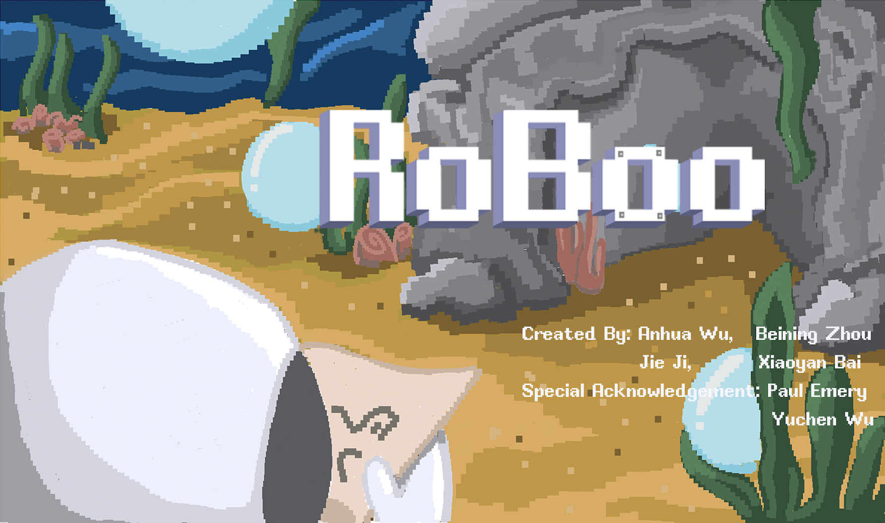

Roboo
About
The projet is created by Xiaoyan Bai (smallyan@umich.edu ), Anhua Wu, Beining Zhou, Jie Ji in a month. Roboo is a 2D puzzle-platformer where you play the role of a cute robot exploring the mysterious underwater world in search of treasure. With the superpower to generate bubbles on various targets, you can evade obstacles and foes, and ultimately locate the coveted prize. Come and join this thrilling adventure!
Contributions
I contributed to the level design. I offered and partly implemented ideas like using light, using bricks as bridges and introducing spikes as one of the enemies. I am responsible for the aesthetics and juice. I implemented the bubble and the waterflow effects. I designed and drew the starting and the ending animation. I edited the trailer video for propagation.
Tips: Better experience with headphones